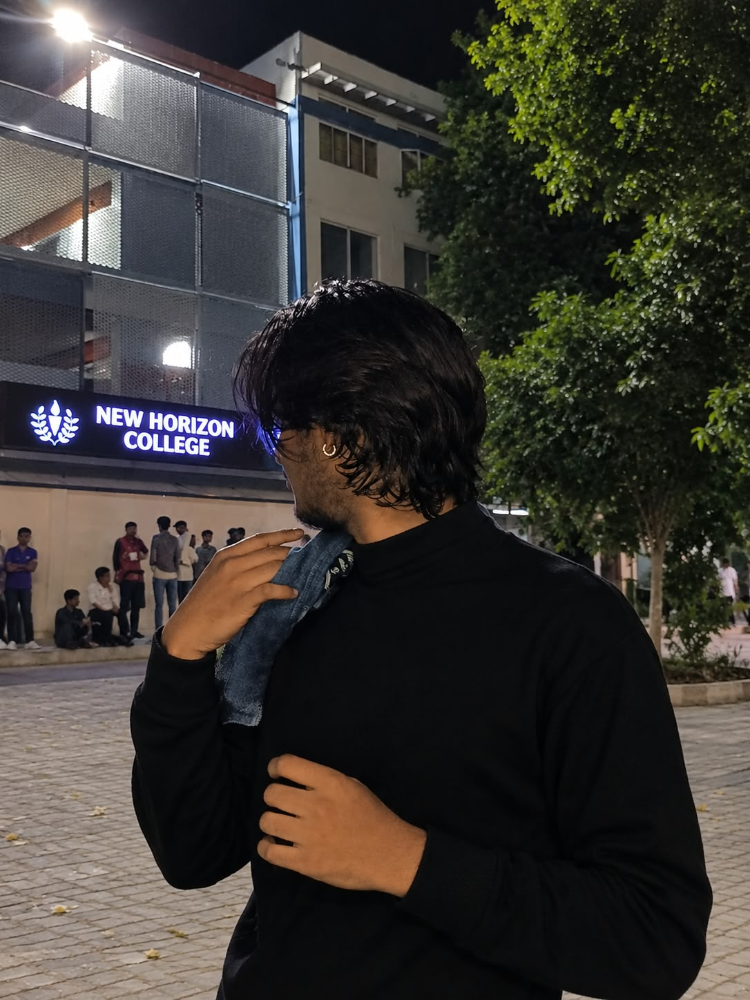

BCA · Cyber Security
New Horizon College · Undergraduate studies
In progressCyber security · Software development
BCA Cyber Security Student & Python Developer
I build practical applications, explore security concepts, and keep learning how to make technology more useful and secure.

Pradeep S · Cyber Security01 / About me
I'm a BCA Cyber Security student passionate about building secure software, learning modern technologies, and continuously improving my skills. I enjoy solving problems, developing practical applications, and exploring cybersecurity concepts while creating clean, user-focused experiences.
I'm naturally curious, persistent with problems, and happiest when I'm learning by building. I want to grow into a professional developer who understands security from the ground up.
02 / Education
My current studies bring software development and cybersecurity together. I’ll add my earlier school details as I update this portfolio.
New Horizon College · Undergraduate studies
In progressSchool name, board, years and 10th / 12th details will be added when ready.
Academic background03 / Skills
A practical toolkit that keeps growing as I build, experiment, and learn.
Programming language
Database
Core area
System basics
Currently learning
Creative skill
Version control
Development tools
Also building confidence with communication, problem-solving, and independent learning.
04 / Selected work
A growing collection of projects built while exploring secure software development.
 4K · UNSPLASH
4K · UNSPLASHA password manager designed to store, generate, and manage credentials securely, with encryption at its core to help protect sensitive data.
 4K · UNSPLASH
4K · UNSPLASHExploring practical full-stack applications and cybersecurity tools as I expand my skills.
 4K · UNSPLASH
4K · UNSPLASHLong-term interests taking shape through study, hands-on practice, and future projects.
05 / My journey
A few milestones from my path into programming and cybersecurity.
06 / Beyond the keyboard
Riding is how I reset and find a little perspective.
 Rider on the open road · Unsplash · 4K delivery
Rider on the open road · Unsplash · 4K deliveryOpen road · Clear mind
Beyond coding and cybersecurity, riding is where I find clarity. Every road teaches patience; every kilometer teaches discipline. Whether I'm riding through new places or learning a new technology, I enjoy the journey as much as the destination.
07 / Goals
Curiosity gives me direction; consistent practice gets me closer.
Keep learning C, strengthen my cybersecurity fundamentals, and build more practical full-stack projects.
Grow into a professional developer and deepen my work in cloud security, ethical hacking, and AI security.
Develop strong technical foundations, build useful and secure applications, and keep learning from real projects.
08 / Milestones
My current highlights come from projects and the skills I've built along the way.
Created a Python password manager focused on secure credential handling and encryption.
Began coding in 2024 and kept expanding into Python, SQL, and cybersecurity.
Learning across programming, Linux, version control, development tools, and security.
Future project work and certifications will be added as I earn them.
09 / Contact
Have a question, opportunity, or just want to say hi? My inbox is open. I'm always glad to connect with people who enjoy building and learning.